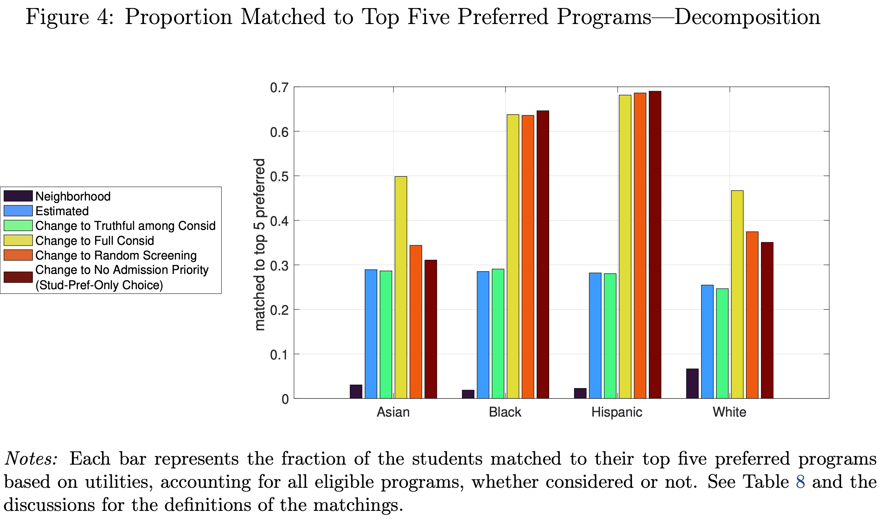
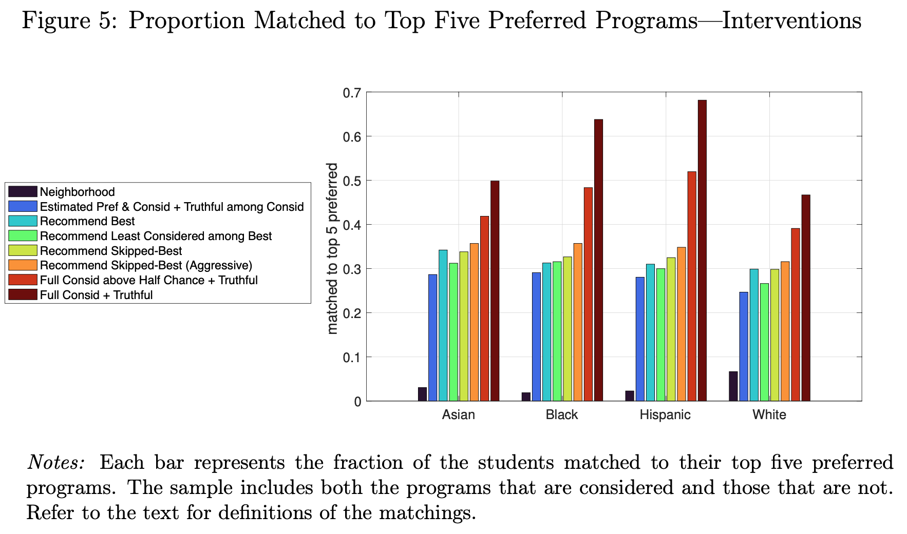

by Jaewon Lee (Compass Lexecon) and Suk Joon Son (UTokyo)
Created: 2024-04-30 Tue 11:27
Theory: “Just run student-proposing deferred acceptance (DA).” But…
Applicants can only consider a limited number of schools and may have mistaken beliefs about admission chances.
Identification


The authors tackle an important topic, and have to overcome difficult identification challenges regarding beliefs and consideration.
Where I’d push: How sure are we of the “ground truth”?
Other nitpicks
Looking forward to the next iteration of this paper!
Thank you! (kwokhao [at] nus [dot] edu [dot] sg)